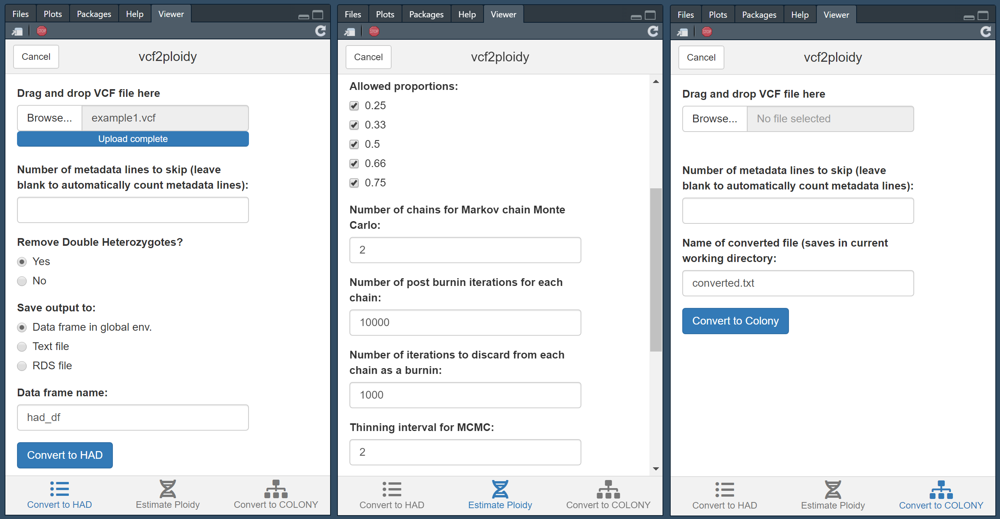
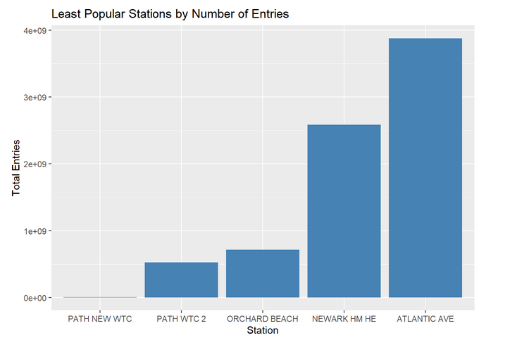

Portfolio
This is a collection of my personal projects and coursework.
A self-taught Data Analyst with over 2 years of experience in the research field.
This is a collection of my personal projects and coursework.
A companion package to GBS2Ploidy, which contains functions that converts files in Variant-Calling Format to Heterozygous Allele Depth Format.
A coding challenge from an interview with EFORTles Inc involving webscraping to determine the 5 busiest and least busy train stations.
An R package that contains a new geom for ggplot2 that visualizes a timeline of earthquake events with their magnitude and death toll. Also contains a function for creating an interactive leaflet map that plots points at an earthquake event's location and list information about that earthquake. Capstone project for the Mastering Software Development in R Specialization provided by Johns Hopkins University on Coursera.
An R package that contains a new geom for ggplot2 that visualizes the distribution of wind speeds in a hurricane. Building Data Visualization Tools Course Project for the Mastering Software Development in R Specialization provided by Johns Hopkins University on Coursera.
Next word predictor application. Capstone Project for Data Science Specialization provided by Johns Hopkins University on Coursera.
An ineractive Sankey diagram of the Titanic survivors data set. Second project for Developing Data Products course provided by Johns Hopkins University on Coursera.
An analysis of the health and economic effects of severe weather events. Second project for the Reproducible Research course provided by Johns Hopkins University on Coursera.
An exercise in building machine learning models that will assess an individual's execution of an exercise. Final project for the Practical Machine Learning course provided by Johns Hopkins University on Coursera.